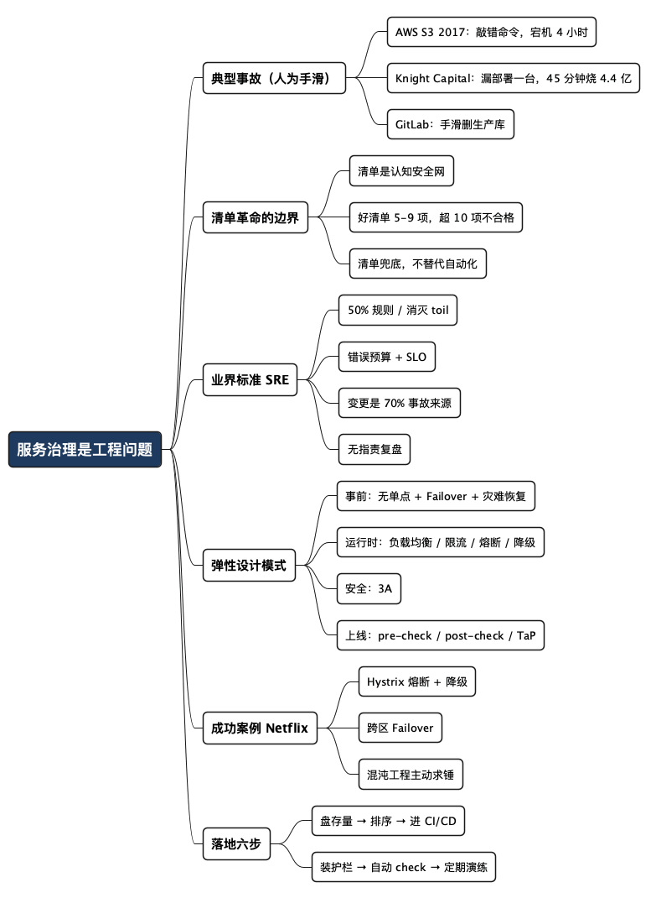

服务治理是工程问题，不是纪律问题
Posted on 五 10 7月 2026 in Tech
| Abstract | 服务治理是工程问题，不是纪律问题 |
|---|---|
| Authors | Walter Fan |
| Category | Tech |
| Version | v1.0 |
| Updated | 2026-07-10 |
| License | CC-BY-NC-ND 4.0 |
服务治理是工程问题，不是纪律问题
2017 年 2 月 28 日上午，一个 AWS 工程师照着一份"操作手册"（playbook），敲了一条命令，本来只想下线一小撮服务器，给 S3 的计费系统排个错。结果命令里一个参数敲错了，下线的服务器远超预期，触发连锁反应，把整个 us-east-1 区的 S3 干趴了近四个小时。
小半个互联网跟着黑屏：Netflix、Reddit、Slack、GitHub、Airbnb……更讽刺的是，AWS 自己的状态看板也挂了——因为它也跑在同一批服务器上，工程师只能跑到 Twitter 上发公告。事后估算，光是给标普 500 公司造成的损失就上亿美元。（来源：AWS 官方复盘）
一条命令，一个手滑。这事我印象特别深，因为它太"普通"了——不是黑客攻击，不是硬件烧了，就是一个熟练工按着规范流程，敲错了一个字。它照出的不是这个工程师的水平，而是这家公司架构和运维的水平：一个手滑，为什么能捅这么大的娄子？
我干后端和服务这行也有些年头了，越来越确信一件事：服务治理是个工程问题，不是纪律问题。 能用代码、流水线、自动化守住的规则、约束、检查、测试，就别留给人在半夜手动去跑。因为人——包括最靠谱的那个你——从来都不是百分百可靠的。
- 这篇文章想说清楚一个主张：靠"人更小心"来保障可靠性，是最不可靠的方案。
- 也顺带盘一盘业界的标准（SRE）、最佳实践（弹性模式）、成功案例（Netflix）和典型事故（S3、Knight Capital 们）。
先讲两个"手滑"烧掉一家公司的故事
光讲道理没意思，先看两个真实的坟头。
Knight Capital，45 分钟烧掉 4.4 亿美元。 2012 年 8 月，这家做高频交易的老牌公司上线一套新交易软件，按流程要部署到 8 台服务器上。但部署是手动的，漏了一台。那台服务器还跑着旧代码，旧代码里有个早该删掉、却一直没删的老功能（power peg），被新的开关莫名其妙激活了。于是这一台机器开始疯狂下无意义的单子，45 分钟烧掉 4.4 亿美元。一家干了 17 年的公司差点当场破产，最后被贱卖收场。（来源："The Scariest DevOps Horror Stories"）
GitLab，手滑删了生产库。 2017 年 1 月，一个工程师在处理数据库复制延迟，本想删掉一个从库（replica），结果对着生产主库敲了删除命令。他反应极快，立刻停手——但 300GB 数据已经没了。更要命的是，后来发现好几种备份手段其实都没真正生效。
这几个故事的共同点，不是"工程师太菜"，恰恰相反，他们都是熟练的、被授权的、照着流程走的老手。共同点是：关键的、危险的、不可逆的操作，被交给了人的手工执行，而系统没有给他兜底。
一条命令、一个手滑，就能毁掉你辛苦搭起来的一切。 所以权限、护栏、二次确认这些"添麻烦"的东西，恰恰是最值钱的。
这里得先解释两个词，免得非专业的读者被绕晕： - 单点失败（single point of failure）：系统里某个部件一旦挂了，整个系统就跟着挂，没有替补。就像一辆车只有一把钥匙，钥匙丢了车就彻底开不走。 - 连锁失败（cascading failure）：一个部件挂了，把压力全压给下一个，下一个也扛不住跟着挂，像多米诺骨牌一样倒下去。S3 那次就是典型。
清单革命很好，但清单要人来执行
有人会说：不是有《清单革命》（The Checklist Manifesto）吗？把操作写成检查清单，照着做不就行了？
这本书我很喜欢，作者 Atul Gawande 是个外科医生，讲的道理很硬：在复杂到超出个人脑容量的领域里，清单是一张"认知安全网"，专门用来兜住人的记忆、注意力和疏忽。航空业从 1930 年代就靠清单——那年波音的 Model 299 试飞坠毁，原因是飞行员忘了松开一个新的操纵锁。结论不是"飞行员该多训练"，而是发明了起飞前检查清单。
但请注意这本书里一个特别重要、却常被忽略的细节：好清单必须短。 Gawande 的经验法则是 5 到 9 项（人的工作记忆上限），跑完最好别超过 60~90 秒。超过这个长度，人就会开始跳步、糊弄，最后干脆不用了。清单只列"杀手项"（killer items）——那些最容易漏、漏了后果最严重的关键步骤，不是把每个动作都写上。（来源：The Checklist Manifesto 摘要）
所以我一直有个偏激但实用的判断标准：
一份运维检查清单超过 10 项，基本就是不合格的。 不是嫌你不认真，恰恰相反——太长说明你把本该自动化的东西，塞给了人的眼睛和手。
清单革命的方法本身没错，错在很多团队把它当成终点：写一份 30 项的上线检查表，贴在 wiki 上，然后指望每个人每次上线都一丝不苟地对一遍。可清单要人看、要人执行，而人在凌晨三点、被电话叫醒、连续加班一周之后，是最不可靠的那个环节。
清单是给"实在没法自动化"的那部分兜底用的，不是用来替代自动化的。 一条检查项，只要能写成脚本、写进流水线、写成自动测试，就应该从人的清单里挪走。清单越短，说明你的自动化越到位。
业界标准：Google SRE 与"消灭 toil"
如果说有一套被反复验证的服务治理"标准动作"，那就是 Google 的 SRE（Site Reliability Engineering，站点可靠性工程）。它的很多理念，现在几乎是行业通用语言。
挑几条最能打的说（都来自 Google SRE 官方资料）：
- 50% 规则 / 消灭 toil：SRE 团队花在重复性手工运维（他们叫 toil，苦力活）上的时间不能超过 50%，超了就得投人去做自动化。这条直接把"减少人工操作"写成了硬指标。
- 错误预算（error budget）：可靠性不是越高越好，而是定一个 SLO（服务等级目标，比如季度可用性 99.9%），1 减去它就是"允许出错的预算"。预算没花完，随便发新功能；花光了，冻结上线，全员回去修稳定性。它用数据取代了"研发想快 vs. 运维想稳"的扯皮。
- 变更是头号杀手：Google 统计，约 70% 的线上事故来自变更（上线、改配置）。所以非紧急上线必须分阶段灰度（canary，金丝雀发布——先放一小撮流量试，没问题再逐步放开），全程有监控盯着，出问题先回滚再排查。
- 告警只有三种出口：要么"呼叫"（page call，得有人立刻处理），要么"工单"（ticket 几天内处理），要么"日志"（log 不用人看，留着以后查）。够不上惊动人的，就别惊动人。
- 无指责复盘（blameless postmortem）：出了事，复盘只对着流程和技术，不对着人。因为把锅甩给"那个手滑的工程师"，下次换个人照样手滑——真正该修的是系统。
你看 AWS S3 那次事后做了什么？加了护栏，让工程师没法一次性下线这么大比例的容量。这就是 SRE 思路：不是要求人下次小心点，而是让"手滑捅大娄子"这件事在系统层面变得做不到。
最佳实践：弹性设计的一整套"防摔"动作
你在问题里列的那一串——无单点、Failover、灾难恢复、服务降级、负载均衡、限流、熔断、3A、pre-check/post-check、TaP——其实正好覆盖了业界公认的弹性（resilience）设计模式。我按"事前 / 运行时 / 事后"给你串一遍，顺便把黑话都翻译成人话。
| 层面 | 手段 | 大白话解释 |
|---|---|---|
| 不留死穴 | 无单点失败 + Failover + 灾难恢复 | 关键部件都有替补；主的挂了自动切到备的；机房级别的灾难也能恢复 |
| 分散压力 | 负载均衡（load balancing） | 把请求摊到多台机器上，别让一台累死 |
| 保护自己 | 限流（rate limiting） | 每秒只放这么多请求进来，多的挡在门外，防止被打爆 |
| 断开传染 | 熔断（circuit breaker） | 发现下游在冒烟，就先不打它了，直接快速失败，别把自己也拖死 |
| 优雅退让 | 服务降级（graceful degradation） | 扛不住时，先砍掉次要功能，保住核心能用（比如先不算个性化推荐，但视频照播） |
| 守好大门 | 安全防护 3A | Authentication（认证：你是谁）、Authorization（授权：你能干啥）、Accounting/Audit（审计：你干过啥） |
| 上线前后 | pre-check / post-check | 上线前自动体检，上线后自动验收，别靠肉眼盯 |
| 生产验证 | TaP（Test against Production） | 在真实生产环境里做受控测试，因为很多问题只有真实流量才暴露得出来 |
这套东西不是我编的，Netflix 是把它玩到极致的教科书案例。
熔断 + 降级 + 超时重试：Netflix 早年用 Hystrix 库给几乎每个微服务都装了熔断器——一个下游服务开始返回错误，上游立刻"断电"，走预设的降级逻辑（fallback），而不是傻等着被拖垮。所有 RPC 调用都配超时，失败了带指数退避 + 抖动（exponential backoff + jitter）地重试，避免大家在同一时刻一起重试、把下游二次打死。（来源：Netflix ChAP 论文）
Failover 是演练出来的，不是画在 PPT 上的：Netflix 控制面部署在 AWS 三个地理区域，某个区出问题，工程师能把流量从故障区"撤离"（evacuate），倒给另外两个区。
混沌工程（Chaos Engineering）——主动把事情搞坏：这是我最欣赏的一招。Netflix 的 Chaos Monkey 会在生产环境里随机干掉实例；Chaos Gorilla 更狠，直接干掉整个可用区。理念很简单也很反直觉：与其等真出事，不如自己天天制造小事故，逼着系统证明它扛得住。 破坏是可控的、有监控的、随时能收手的。你越难把系统的"稳态"搞乱，它就越弹性。（来源：Netflix 故障注入）
当然 Chaos 在产线可不能随便做，要慎之又慎，只有你的架构做到了 Zero Down Time，在开发和测试环境中做了足够的演练，才能在产线上做
落地：怎么把"靠人"一步步换成"靠系统"
道理都懂，关键是怎么动手。给一套我自己认的推进顺序，取向就一句话——能自动化的绝不留给手工，实在留给手工的，清单越短越好。
-
先盘存量：把所有手工操作列出来 把团队现在还在手动干的事全列出来——手动上线、手动改配置、手动扩容、手动跑检查。这份清单就是你的"技术债地图"，越长越危险。
-
按"危险 × 频繁"排序，先干右上角 又危险又频繁的（比如手动上线、手动改生产配置），优先自动化。危险但极少发生的（比如灾难恢复），优先做演练。
-
把检查项沉进流水线（CI/CD） 代码规范、单元测试、集成测试、安全扫描、配置校验——凡是能写成脚本的，全塞进 CI/CD，让机器在每次提交、每次上线时自动跑。人不该做机器该做的事。
-
给危险操作装护栏 参照 AWS 的做法：不是提醒人"小心点"，而是让危险操作在系统层面做不到或必须二次确认。比如生产删库要审批、大批量下线要卡阈值、上线默认灰度不给一把梭。
-
把 pre-check / post-check 自动化 上线前自动体检（依赖是否就绪、配置是否合法），上线后自动验收（核心指标是否正常，不正常自动回滚）。这两步做好，半夜的电话能少一大半。
-
定期演练：故障注入 + 灾难恢复 Failover、灾难恢复、降级预案，不演练就等于没有。定期主动搞坏，才知道你的"高可用"是真的还是 PPT 上的。
一句话：
判断一个团队的运维成熟度，就看它还有多少事情"必须靠某个人记得去做"。 这种事越少，团队越可靠；越多，你就越是在赌那个人今晚别累、别忘、别手滑。
最后一句
回到开头那个 AWS 工程师。他没被开除，AWS 也没把复盘写成"某某同学以后要细心"。他们默默加了一道护栏，让同样的手滑再也捅不出这么大的篓子。
这才是我理解的服务治理：不跟人性较劲，而是把可靠性一点点从"人的自觉"迁移到"系统的约束"里。 清单革命教我们兜底，SRE 教我们量化和自动化，Netflix 教我们主动求锤。三者合起来是一句话——
别指望人不犯错，要让系统在人犯错时也不塌。
你所在的团队，现在还有多少事，是"全靠某个老师傅记得去做"？不妨今晚就把它列出来，那份清单的长度，就是你离下一次事故的距离。
全文思维导图
@startmindmap
<style>
mindmapDiagram {
node {
BackgroundColor #F8F9FA
RoundCorner 10
Padding 10
FontSize 13
}
:depth(0) {
BackgroundColor #1E3A5F
FontColor white
FontSize 18
FontStyle bold
}
:depth(1) {
FontSize 15
FontStyle bold
}
:depth(2) {
FontSize 13
}
}
</style>
* 服务治理是工程问题
** 典型事故（人为手滑）
*** AWS S3 2017：敲错命令，宕机 4 小时
*** Knight Capital：漏部署一台，45 分钟烧 4.4 亿
*** GitLab：手滑删生产库
** 清单革命的边界
*** 清单是认知安全网
*** 好清单 5-9 项，超 10 项不合格
*** 清单兜底，不替代自动化
** 业界标准 SRE
*** 50% 规则 / 消灭 toil
*** 错误预算 + SLO
*** 变更是 70% 事故来源
*** 无指责复盘
** 弹性设计模式
*** 事前：无单点 + Failover + 灾难恢复
*** 运行时：负载均衡 / 限流 / 熔断 / 降级
*** 安全：3A
*** 上线：pre-check / post-check / TaP
** 成功案例 Netflix
*** Hystrix 熔断 + 降级
*** 跨区 Failover
*** 混沌工程主动求锤
** 落地六步
*** 盘存量 → 排序 → 进 CI/CD
*** 装护栏 → 自动 check → 定期演练
@endmindmap

本作品采用知识共享署名-非商业性使用-禁止演绎 4.0 国际许可协议进行许可。 欢迎在我的个人网站 https://www.fanyamin.com 访问原文并评论。